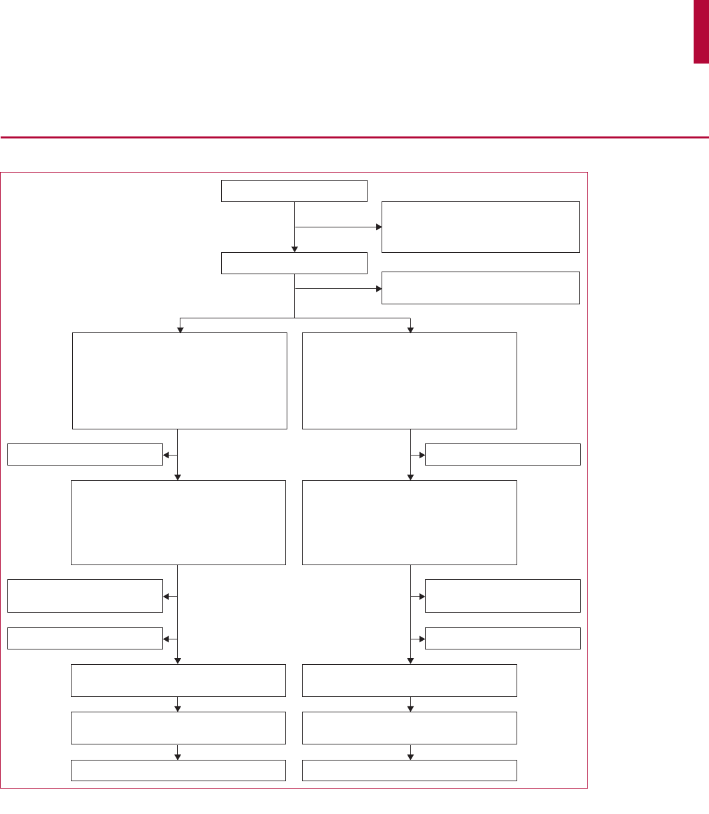

Articles
www.thelancet.com Vol 379 May 26, 2012
1951
Specialised treatment based on cognitive behaviour therapy
versus usual care for tinnitus: a randomised controlled trial
Rilana F F Cima, Iris H Maes, Manuela A Joore, Dyon J W M Scheyen, Amr El Refaie, David M Baguley, Lucien J C Anteunis, Gerard J P van Breukelen,
Johan W S Vlaeyen
Summary
Background Up to 21% of adults will develop tinnitus, which is one of the most distressing and debilitating audiological
problems. The absence of medical cures and standardised practice can lead to costly and prolonged treatment. We
aimed to assess eff ectiveness of a stepped-care approach, based on cognitive behaviour therapy, compared with usual
care in patients with varying tinnitus severity.
Methods In this randomised controlled trial, undertaken at the Adelante Department of Audiology and
Communication (Hoensbroek, Netherlands), we enrolled previously untreated Dutch speakers (aged >18 years)
who had a primary complaint of tinnitus but no health issues precluding participation. An independent research
assistant randomly allocated patients by use of a computer-generated allocation sequence in a 1:1 ratio, stratifi ed
by tinnitus severity and hearing ability, in block sizes of four to receive specialised care of cognitive behaviour
therapy with sound-focused tinnitus retraining therapy or usual care. Patients and assessors were masked to
treatment assignment. Primary outcomes were health-related quality of life (assessed by the health utilities index
score), tinnitus severity (tinnitus questionnaire score), and tinnitus impairment (tinnitus handicap inventory
score), which were assessed before treatment and at 3 months, 8 months, and 12 months after randomisation. We
used multilevel mixed regression analyses to assess outcomes in the intention-to-treat population. This study is
registered with ClinicalTrials.gov, number NCT00733044.
Findings Between September, 2007 and January, 2011, we enrolled and treated 492 (66%) of 741 screened patients.
C
ompared with 247 patients assigned to usual care, 245 patients assigned to specialised care improved in health-
related quality of life during a period of 12 months (between-group diff
erence 0·059, 95% CI 0·025 to 0·094; eff ect
size of Cohen’s d =0·24; p=0·0009), and had decreased tinnitus severity (–8·062, –10·829 to –5·295; d=0·43;
p<0·0001) and tinnitus impairment (–7·506, –10·661 to –4·352; d=0·45; p<0·0001). Treatment seemed eff ective
irrespective of initial tinnitus severity, and we noted no adverse events in this trial.
Interpretation Specialised treatment of tinnitus based on cognitive behaviour therapy could be suitable for widespread
implementation for patients with tinnitus of varying severity
.
Funding
Netherlands Organisation for Health Research and Development (ZonMW).
Introduction
16–21% of adults develop tinnitus at some point in their
lifetime, manifesting as the perception of a noxious
disabling internal sound without an external source.
1
Although often not recognised by the general public,
tinnitus is one of the most distressing and debilitating
audiological disorders and aff ects almost all aspects
of daily life.
2,3
Cognitive impairments and negative emo-
tions associated with tinnitus are especially bother some
for patients and their families.
4,5
Because tinnitus is not objectifi ed easily, and medical
eff orts at cure have been unsuccessful, the eff ective
management of tinnitus complaints is often a lengthy
and troublesome treatment process involving numerous
disciplines.
6
Evidence for a uniformly successful treat-
ment of tinnitus is lacking, and present usual-care
practices for tinnitus consist primarily of fragmented
interventions, which often result in communication to
patients that nothing can be done about the disorder and
that they should learn to live with it.
6
The absence of
standardised practice presents diffi culties in assessment,
treatment, and identifi cation of subsets of patients with
diff erential clinical demands, and in comparisons of
clinical and research outcomes.
7
Two main treatment approaches for tinnitus exist. First,
sound-based therapies, such as tinnitus retraining therapy,
which involve masking of tinnitus at the sound per cep-
tion level in combination with structured counselling
sessions.
8,9
This approach, which is often based on
Jastreboff ’s neurophysiological model,
10
aims to amelio-
rate tinnitus distress through education and exposure to a
neutral external sound. Through habitu ation to this
neutral sound, which is expected to generalise to the
threatening tinnitus sound, patients are expected to have
diminished annoyance from tinnitus. Supporting evi-
dence for the tinnitus retraining therapy approach is
scarce, and most published reports derive from retro-
spective and uncontrolled trials.
8,11,12
The second main
approach is cognitive behaviour therapy.
13–15
Such treat-
ment is a compre hensive form of psycho therapy aimed at
Lancet 2012; 379: 1951–59
See Comment page 1926
Clinical Psychological Science
(R F F
Cima MSc,
J W S
Vlaeyen PhD) and
Department of Methodology
and Statistics
(G J P van Breukelen PhD),
Maastricht University,
Maastricht, Netherlands;
Department of Clinical
Epidemiology and Medical
Technology Assessment
(I H Maes MSc, M A Joore PhD)
and Department of
Otorhinolaryngology and
Head and Neck Surgery
(L J C Anteunis PhD), University
Hospital Maastricht,
Maastricht, Netherlands;
Centre of Expertise in
Rehabilitation and Audiology
(R F F Cima) and Department of
Audiology and Communication
(R F F Cima,
D J W M Scheyen MSc),
Adelante, Hoensbroek,
Netherlands; Centre for
Hearing and Balance Studies,
Bristol University, Bristol, UK
(A El Refaie PhD); Departments
of Otolaryngology and
Audiology, Addenbrooke’s
Hospital, Cambridge, UK
(D M Baguley PhD); and
Research Centre Health
Psychology, University of
Leuven, Leuven, Belgium
(J W S Vlaeyen)
Correspondence to:
Dr Rilana F F Cima,
Clinical Psychological Science,
Maastricht University,
Maastricht PO Box 616,
6200 MD, Netherlands
r.cima@maastrichtuniversity.nl
Articles
1952
www.thelancet.com Vol 379 May 26, 2012
modifi cation of dysfunctional beliefs and behav iours.
Typically, cognitive behaviour therapy includes psycho-
education, relaxation, exposure tech niques, and
behavioural reacti vation, often in com bination with
mindfulness-based training. Although treat ment of tinni-
tus with such therapy can reduce distress and improve
quality of life, large scale and well controlled trials are
needed.
5,13,15,16
The premise that the intensity of cognitive
behaviour therapy could vary dependent on severity of
tinnitus complaints has not been tested to our knowledge.
We developed a new multidisciplinary protocol for
treatment of tinnitus, including a stepped-care cognitive
behaviour therapy approach with elements from tinnitus
retraining therapy. Stepped care allows a framework for
organisation of health services on the basis of individual
needs of patients, with a gradual increase in the intensity
of care at each level.
17
In this randomised controlled study,
we aimed to assess eff ectiveness of this specialised treat-
ment protocol compared with care as usual.
6
Methods
Study design and participants
We undertook a two group, two step, randomised
controlled trial at Adelante Department of Audiology and
Communication (Hoensbroek, Netherlands), in adult
patients with tinnitus, with follow-up assessments at 3, 8,
and 12 months after randomisation (appendix). Patients
with tinnitus who were referred to our centre were invited
to an off -centre baseline assessment, after which they
were randomly allocated to either usual care or specialised
care. We postulated that specialised care would be more
eff ective than usual care in terms of improvement of
generic health-related quality of life and reduction of
tinnitus severity, impairment, general negative aff ect,
catastrophic misinterpretation, and tinnitus-related fear.
Adult patients referred to our centre with a primary
complaint of subjective tinnitus were eligible for
inclusion. We excluded patients who were unable to read
and write in Dutch, had health issues that impaired
attendance or prevented participation (eg, terminal ill-
ness or physical disability), or had undergone treatment
at our centre within 5 years before trial enrolment.
Patients were assessed by an otolaryngologist to rule out
pathological changes that needed immediate medical
care. We obtained written informed consent before
assess ment and trial entry.
The medical ethical board of the Rehabilitation
Foundation Limburg reviewed and approved the study
protocol (METC-SRL 11/09/2006).
Randomisation and masking
An independent research assistant, who was based
outside of Adelante, Department of Audiology and Com-
munication, randomly allocated patients by use of a
computer-generated allo cation sequence to usual care or
specialised care in a 1:1 ratio af
ter receipt of informed
consent and baseline assess ments. R
andomisation was
stratifi ed by tinnitus severity (<47 vs ≥47 points on the
tinnitus question naire [TQ]) and hearing impairment
(pure tone average of <60 dB vs ≥60 dB hearing level in
worst ear). Within each of the four strata, patients were
randomised in blocks of four patients.
Patients and investigators were masked to treatment
group allocation. Before trial enrolment, patients were
in formed that they would be allocated to one of two
diff erent treatments aimed at tinnitus management, with
a client-centred, stepped-care approach. Patients were also
aware that by giving their consent they would not be
informed to which treatment they were allocated. Early in
Panel 1: Usual care treatment protocol
Step 1
Audiological diagnostics (105 min)
• Audiology assistant
• Pure
tone and speech audiometry, tympanometry (stapedial refl exes)
• Tinnitus analyses: pitch mask frequency and minimum masking level
• Uncomfortable loudness level measurement
• Hearing aid check and optimisation (if present)
• Questions about duration and location of the tinnitus
• Individual consult by clinical physicist in audiology
• Audiological anamnesis
• Assessment of audiometry and explanation
• Information about tinnitus and hearing loss
• Assessment of severity of complaints
• Prescription hearing aid (when indicated by hearing loss)
• Prescription tinnitus masker* (when indicated by patient)
Audiological rehabilitation (30 min)
• Audiology assistant
• Check-up after 8 weeks of hearing aid use
• Hearing aid check and optimisation
Audiological follow-up (40 min)
• Audiology assistant
• Pure tone and speech audiometry, tympanometry (stapedial refl exes)
• Uncomfortable loudness level measurement
• Hearing aid check and optimisation (if present)
• Tinnitus analyses: pitch mask frequency and minimum masking level
• Clinical physicist in audiology
• Individual consult
• Referral to social work (when indicated)
Step 2
Intake social work (60 min)
• Social worker
• General inventory of complaints and use of hearing aids or maskers
• Social work trajectory of maximum nine follow-up contacts (when indicated)
Follow-up social work (60 min)
• Social worker
• Maximum nine contacts including counselling sessions, telephone contacts,
extraneous appointments with third parties, house calls
*Sound-generators were prescribed when specifi cally asked for by the patient, and were adjusted to produce a small band noise
around the pitch match frequency and slightly below the tinnitus masking level.
See Online for appendix
Articles
www.thelancet.com Vol 379 May 26, 2012
1953
the intervention procedure detailed information about the
treat ment received was unveiled, while the partici pants re-
mained masked to the content of the alternative treatment.
Procedures
Usual care and specialised care were provided with a
stepped approach (appendix). Step 1 and step 2 in usual
care and specialised care were completed by 8 months
and followed by a no-contact period of 4 months before
the last follow-up assessment at 12 months. Treatment in
step 2 lasted for up to 12 weeks in both treatment
approaches. Patients started step 2 within 4–6 weeks after
3 month assessment, depending on group-treatment
schedule. We used case record forms for every patient to
Panel 2: Specialised care treatment protocol
Step 1
Audiological diagnostics (105 min)
• Audiology assistant
• Pure
tone and speech audiometry, tympanometry
(stapedial refl exes)
• Tinnitus analyses: pitch mask frequency and minimum
masking level
• Uncomfortable loudness level measurement
• Hearing aid check and optimisation (if present)
• Tinnitus anamnesis using structured interview
• Individual consult by clinical physicist in audiology (trained
in tinnitus retraining counselling)*
• Audiological anamnesis, assessment of audiometry
and explanation
• Information about tinnitus and hearing loss
• Introduction to the neurophysiological model
10
• Reading materials and treatment rationale are provided
• Explanation of treatment protocol in the fi rst step and
explanation of stepped-care approach
• Prescription hearing aid (when indicated by
hearing loss)
• Prescription sound generator† (when indicated
by patient)
Audiological rehabilitation (30 min)
• Audiology assistant
• Check-up after 8 weeks of hearing aid or masking
device use
• Hearing aid check or masking device optimisation
Tinnitus educational session provided within the cognitive
behaviour therapy framework (120 min; maximum ten patients
with partners)
• Psychology assistant
• Tinnitus retraining therapy counselling elements
• Extensive explanation of neurophysiological model
• Fear avoidance discussion
• General information about step 2 care is provided
• Group discussion and remaining questions answered
Intake psychology (extensive tinnitus specifi c and general
psychological diagnostic anamnesis; 60 min)
• Clinical psychologist
• When indicated by scores on tinnitus questionnaire and
tinnitus handicap inventory, and by anamnesis,
treatment goals for step 2 are formulated in
concordance with patient and planned in
multidisciplinary team meeting
Audiological follow-up (40 min)
• Audiology assistant
• Pure tone and speech audiometry, tympanometry
(stapedial refl exes)
• Tinnitus analyses: pitch mask frequency and minimum
masking level
• Uncomfortable loudness level measurement
• Hearing aid check and optimisation (if present)
• Clinical physicist in audiology (trained in tinnitus
retraining counselling)
• Individual consult*
Multidisciplinary team meeting (10 min per patient)
• All professionals involved in specialised care
• All tinnitus patients are discussed and, when indicated
by scores on tinnitus questionnaire/tinnitus handicap
inventory and clinical view of psychologist,
multidisciplinary treatment goals for step 2 are
integrated in a plan of treatment
Step 2
Group treatments (treatment intensity and group size varies
according to severity; 120 min per session over 12 weeks)
• Clinical psychologist, movement therapist, physical therapist,
clinical physicist in audiology, social worker, speech therapist
• Group sessions (of 10–12 patients, 6–8 patients, or
3–4 patients, dependent on tinnitus severity level and
hearing level): cognitive behaviour therapy,
psychoeducation, cognitive restructuring, exposure
techniques, mindfulness-based elements, stress relief,
and attention redirecting techniques by means of
movement therapy, and applied relaxation
• Themed group counselling sessions (including partners)
Individual trajectory if group treatment is contraindicated (60 min
per discipline per patient for up to 12 weeks)
• Clinical psychologist, movement therapist
• Combination of cognitive behaviour therapy,
psychoeducation, cognitive restructuring, exposure
techniques, mindfulness-based elements, stress relief,
attention redirecting techniques by means of movement
therapy, and applied relaxation applied on individual
basis (with optional addition of a combination of
professionals involved in group treatments)
*Specifi cally, the counselling elements of tinnitus retraining therapy were part of
intervention, which aimed to educate patients about tinnitus and the neurophysiological
model. †Sound-generators were prescribed when specifi cally asked for by the patient and
were adjusted to produce a small band noise around the pitch match frequency and slightly
above hearing threshold, as measured with the small band noise of the sound generator.
Articles
1954
www.thelancet.com Vol 379 May 26, 2012
standardise treatments and for collection of trial data in
place of medical charts. All case record forms included
detailed protocols for every separate professional, includ-
ing supporting staff , and for multidisciplinary patient-
related activities.
Usual care was provided on the basis of a standardised
protocol modelled on the care typically provided by
secondary-care audiological centres across the Nether-
lands. We surveyed all 26 audiological centres operative
in the Netherlands by telephone as a qualitative
study. We averaged the number of professionals
involved and counselling hours provided, and two
independent assessors categorised discipline type and
health-care activities. Panel 1 shows the usual care
treatment protocol.
Step 1 of usual care was a standard audiological
intervention. For patients with mild complaints, treat-
ment ended after the fi rst step but these patients remained
in the trial for follow-up. When tinnitus was more severe
(as measured at baseline and after audiological coun-
selling), patients entered step 2 of treatment.
Panel 2 shows the specialised care treatment protocol.
Step 1 of specialised care consisted of multidisciplinary
diagnostics and specifi c tinnitus retraining counsel-
ling, which were undertaken in a cognitive behaviour
framework (including audiological rehabilitation when
necessary). For patients with mild complaints this basic
intervention was expected to be suffi cient, and they were
measured for follow-up only. When tinnitus was more
severe (as measured at baseline and after psychological
screening), patients entered step 2 of treatment, which
consisted of three diff erent 12-week group treatment
options with levels of care dependent on tinnitus severity
and hearing loss (panel 2).
We assessed treatment fi delity in a post-hoc inves-
tigation of case record forms, attendance lists, and
electronic databases, for a random sample of 40 patients
per treatment group (usual care and specialised care), to
verify whether both treatments were provided according
to treatment protocols (adherence) and not infl uenced
overly (contamination) by contrasting elements from the
other treatment.
18
The appendix shows specifi cs of the
data collection.
Outcomes
Before randomisation, we assessed hearing impairment
with pure tone audiometry and tinnitus severity with
the TQ to provide data for strati fi cation.
19
Pure tone
audiometry was done bilaterally at 1 kHz, 2 kHz, and
4 kHz with a mobile audiometer (Interacoustics AS208,
Assens, Denmark) with audio metry headphones (Tele-
phonics TDH-39, Peltorcapped, New York, NY, USA) and
we calculated the pure-tone average for each frequency.
The primary outcome measures were health-related
quality of life (by the health utilities index [HUI] mark 3),
tinnitus severity, and tinnitus impairment, which were
assessed at baseline and at 3 months, 8 months, and
12 months after randomisation.
HUI mark 3 is a 17-item questionnaire designed to
assess health-related quality of life or generic health on
eight dimensions: vision, hearing, speech, ambulation,
dexterity, emotion, cognition, and pain or complaints.
Every question has fi ve or six levels, and 972 000 possible
health states can be computed. Possible utility scores
range from –0·36 to 1·00 for the HUI mark 3.
20
This
index has shown adequate responsiveness in the tinni-
tus population.
21
We assessed tinnitus severity with the
TQ,
22
which consists of 52 items rated on a 3-point scale
and assesses psychological distress associated with
tinnitus. Psycho metric properties of the questionnaire
have proved excellent in diff erent lan guages.
23
The
tinnitus handicap inventory is a 25-item instrument
scored on a 3-label category scale, and assesses tinnitus-
related impairment on three domains: functional, emo-
tional, and catastrophic.
24–26
Both overall and subscale
internal consistency were satisfactory in our population.
For secondary outcomes, we measured negative aff ect
with the hospital anxiety and depression scale (HADS),
Overall (n=492) Usual care (n=247) Specialised care (n=245)
Age, years 54·19 (11·54) 54·63 (12·02) 53·74 (11·05)
Sex, male 308 (63%) 150 (61%) 158 (65%)
Education (%)
Low 225 (46%) 117 (47%) 108 (44%)
Middle 136 (28%) 61 (25%) 76 (31%)
High 131 (27%) 70 (28%) 61 (25%)
Employed 263 (53%) 124 (50%) 139 (57%)
Duration of tinnitus
<1 year 147 (30%) 81 (33%) 67 (27%)
1–5 years 191 (39%) 94 (38%) 98 (40%)
>5 years 153 (31%) 73 (30%) 81 (33%)
Mild complaints (
tinnitus questionnaire
score
<47)
224 (46%) 112 (45%) 112 (46%)
Tinnitus sound (pure tone) 71 (14%) 24 (10%) 44 (18%)
Tinnitus in left ear or head 123 (25%) 61 (25%) 62 (25%)
Tinnitus in right ear or head 98 (20%) 48 (19%) 49 (20%)
Continuous tinnitus 413 (84%) 206 (83%) 207 (85%)
Interval tinnitus 34 (7%) 7 (3%) 26 (11%)
Hearing aid 91 (19%) 45 (18%) 46 (19%)
Sound generator 93 (19%) 46 (19%) 47 (19%)
PTA right ear 29·74 (19·40) 30·30 (20·58) 29·18 (18·15)
PTA left ear 31·05 (20·64) 30·96 (20·25) 31·14 (21·06)
PTA bilateral 30·57 (17·60) 30·77 (17·85) 30·37 (17·38)
Health utilities index score 0·635 (0·289) 0·641 (0·295) 0·629 (0·283)
Tinnitus questionnaire score 49·05 (18·85) 48·78 (19·23) 49·32 (18·49)
Tinnitus handicap inventory score 38·96 (22·88) 38·65 (23·19) 39·27 (22·60)
Hospital anxiety and depression scale 12·20 (8·04) 11·79 (8·03) 12·60 (8·05)
Tinnitus catastrophising scale score 21·11 (12·19) 21·36 (12·57) 20·86 (11·81)
Fear of tinnitus questionnaire score 7·25 (3·59) 7·31 (3·65) 7·19 (3·54)
Data are mean (SD) or n (%). PTA=pure tone average for 1 kHz, 2 kHz, and 4 kHz.
Table 1: Demographic and baseline characteristics

Articles
www.thelancet.com Vol 379 May 26, 2012
1955
which contained 14 items and has good reliability and
validity.
27
The tinnitus catastrophising scale is an adapted
version of the pain catastrophising scale
28
and assesses
catastrophic misinterpretations of the tinnitus sound
with 13 items rated on a 5-point scale (0 is not at all, 4 is
always). The tinnitus catastrophising scale has been
tested with patients
29
and internal consistency of the total
score in our population was excellent (Cronbach’s α=94).
The fear of tinnitus questionnaire (FTQ) measures fear
related to tinnitus. Some of the items on this ques-
tionnaire were derived from the Tampa scale for
kinesiophobia and the pain anxiety symptoms scale.
30,31
This questionnaire was pretested with patients
29
and has
17 items rated on a true or false scale. Internal consistency
of the total score in our population was excellent
(Cronbach’s α=82). Adverse events were surveyed
throughout the trial and at all assessments.
We gathered demographic data with a 5-item ques-
tionnaire to establish sex, age, duration of complaints,
educational achievement, and adherence area.
Statistical analysis
We identifi ed only one study
5
about quality of life of
tinnitus patients attending a specialised tinnitus centre.
741 patients screened for eligibility
626 invited to participate
115 excluded
7 aged <18 years
23 insufficient knowledge of Dutch
85 visited treatment centre within previous 5 years
124 declined to participate
10 other exclusions*
245 allocated specialised care step 1
27 dropped out before 3 months
1 part of a couple allocated to different treatments
1 not able to attend
2 not able to proceed (other medical issues)
2 did not complete questionnaires
3 unable to complete questionnaires due to stress
18 unknown
218 received specialised care step 1
200 completed measurements at 3 months
18 missed measurement at 3 months but remained in trial
9 dropped out before 8 months
2 not able to proceed (other medical issues)
2 did not complete questionnaires
1 not able to complete
4 unknown
82 specialised care step 2 not indicated
but remained in trial
93 received specialised care step 2
175 completed measurements at 8 months
16 missed measurement at 8 months but remained in trial
171 completed measurements at 12 months
4 missed measurements at 12 months
245 included in the intention-to-treat analysis
247 allocated usual care step 1
44 dropped out before 3 months
1 part of a couple allocated to different treatments
5 withdrew
5 did not complete questionnaires
1 no longer affected by tinnitus
2 chose other health-care provider
30 unknown
203 received usual care step 1
194 completed measurements at 3 months
9 missed measurement at 3 months but remained in trial
15 dropped out before 8 months
4 not able to proceed (other medical issues)
1 died
10 unknown
161 completed measurements at 8 months
18 missed measurement at 8 months but remained in trial
88 usual care step 2 not indicated but
remained in trial
91 received usual care step 2
161 completed measurements at 12 months
247 included in the intention-to-treat analysis
Figure: Trial profi le
*Patients not able to enroll because of other medical issues or life events (ie, moved to another area or started another job).
Articles
1956
www.thelancet.com Vol 379 May 26, 2012
We used the reported mean change over time of 0·065
(SD 0·15) in health utility score in that study as measured
with the short form-36,
32
to calculate our sample size.
Assuming an α level of 0·05 (two-sided), power of 80%,
and 15% loss to follow-up, we calculated that we would
need 99 patients per treatment group.
We did a post-calculation during the trial to detect a
relevant diff erence within the subgroup of patients
receiving treatment step 2. As our second treatment step
was much the same as treatment in an earlier study,
13
the
eff ect size of d=0·62 on the TQ in that study was used to
compute power for our step 2. Assuming an α of 0·05 (two-
sided) and a power of 80%, we needed 41 patients per
group in the second step of care. Assuming that 21% of all
patients entering step 1 would enter step 2, and accounting
for 15% attrition, 232 patients were needed per group in
step 1. The increment in inclusion was approved by the
medical ethical board (METC-SRL 08/07/2008) and the
steering committee of the funding party (ZonMW). We
followed consolidated standards for reporting trials
(CONSORT) guidelines
33
and used SPSS version 18.0 for
all statistical analyses.
Treatment fi delity was checked fi rst by assessing
protocol adherence; dividing the number of required
observed elements (essential and unique, and essential
but not unique) by the maximum possible number of
these elements.
18
Furthermore, treatment contamination
was assessed by dividing the number of observed not
allowed treatment elements by the maximum number of
these elements. Finally, analysis of variance was used to
assess equality of adherence and contamination between
usual care and specialised care, by using scores calculated
for all rated cases (80 patients; see appendix for details).
We used an intention-to-treat approach; all patients who
were measured at baseline and allocated to treat ment
were included irrespective of their participation in
subsequent treatment or follow-up measurements. We
used mixed (multilevel) regression analyses for all
available data per outcome, without imputation of
missing data, and treat ment, time, and covariates as
predictors (appendix).
To assess whether specialised care and usual care treat-
ment was diff erent (measured with HUI and HADS) for
patients who had severe tinnitus and entered step 2 and
those who had mild tinnitus and step 1 care only, we
tested the interaction between tinnitus severity at
baseline and treatment (α=0·01 for the interaction test
with respect to these outcome variables).
This study is registered with ClinicalTrials.gov, number
NCT00733044.
Role of the funding source
The sponsor of the study had no role in study design, data
collection, data analysis, data interpretation, or writing of
the report. RFFC and JWSV had full access to the data;
IHM, MAJ, and LJCA had insight into data upon request;
all authors approved the fi nal report; and RFFC had fi nal
responsibility for the decision to submit for publication.
Results
Table 1 shows baseline values of the study population and
the fi gure shows the trial profi le, including numbers of
patients who dropped out and non-responders, with
reasons if known. Non-response was defi ned as missed
measurements at one or more follow-up assessments;
participants leaving the trial permanently and informing
investigators were regarded as having dropped out.
Of 741 participants screened for eligibility, 626 were
invited for participation, and 492 completed baseline
measurements and were randomised to the fi rst step
of treatment (247 allocated to usual care and 245 to
specialised care). Randomisation and treatment allo ca-
tion took place between September, 2007, and December,
2009, and follow-up was completed in January, 2011.
Numbers of participants who did not respond or
dropped out did not diff er between groups at any
follow-up (α=0·01, p>0·20), as measured with logistic
regression with missing/not-missing as the dependent
variable, and group, baseline characteristics (age, sex,
education, duration of complaints, tinnitus severity at
baseline, and hearing loss) and scores on the HUI,
the TQ, and the THI at the previous timepoint as
independent variables. We noted a positive association
Baseline (n=247 in
usual care; n=245
in specialised care)
3 months
(n=194 in usual
care; n=200 in
specialised care)
8 months
(n=161 in usual
care; n=175 in
specialised care)
12 months
(n=161 in usual
care; n=171 in
specialised care)
Primary outcomes
Health-related quality of life (HUI)
Usual care 0·641 (0·295) 0·640 (0·294) 0·634 (0·287) 0·631 (0·279)
Specialised care 0·628 (0·284) 0·620 (0·285) 0·656 (0·254) 0·681 (0·250)
Tinnitus severity (TQ)
Usual care 48·87 (19·22) 45·51 (19·65) 42·36 (19·62) 42·12 (19·81)
Specialised care 49·39 (18·50) 42·01 (19·81) 36·47 (17·48) 33·43 (16·89)
Tinnitus impairment (THI)
Usual care 38·73 (23·20) 37·38 (23·74) 34·14 (24·60) 33·51 (23·25)
Specialised care 39·25 (22·65) 34·25 (23·44) 28·85 (20·51) 26·45 (18·81)
Secondary outcomes
Negative eff ect (HADS)
Usual care 11·83 (8·03) 12·08 (8·75) 11·47 (8·55) 10·83 (8·03)
Specialised care 12·61 (8·07) 11·91 (7·96) 10·52 (7·21) 10·22 (7·01)
Tinnitus catastrophising (TCS)
Usual care 21·42 (12·56) 18·65 (11·76) 17·14 (11·54) 15·95 (11·79)
Specialised care 20·89 (11·83) 16·20 (11·65) 12·45 (10·30) 11·73 (9·91)
Tinnitus-related fear (FTQ)
Usual care 7·32 (3·66) 6·60 (3·70) 6·19 (4·06) 6·04 (4·00)
Specialised care 7·19 (3·54) 5·60 (3·87) 4·52 (3·50) 4·20 (3·16)
Data are mean (SD) and were based on all available patients. HUI=health utilities index. TQ=tinnitus questionnaire.
THI=tinnitus handicap inventory. HADS=hospital anxiety and depression inventory. TCS=tinnitus catastrophising
scale. FTQ=fear of tinnitus questionnaire.
Table 2: Primary and secondary outcomes at baseline and 3 months, 8 months, and 12 months after baseline
Articles
www.thelancet.com Vol 379 May 26, 2012
1957
between age and absence of response or dropout at
3 months (p=0·0162) and at 12 months (p=0·0070) after
randomisation. All other predictors and time points did
not reach signifi cance (p>0·832).
86 (35%) of 247 patients in the usual care group and
74 (30%) of 245 patients in the specialised care group
were lost to follow up by month 12. Reasons for non-
response seemed unrelated to treatment content.
In the treatment fi delity check the inter-rater reliability
between both independent raters for the identifi cation of
treatment (usual care vs specialised care) was excellent
(Cohen’s κ=0·96), and good for the identifi cation of
step 2 treatment (κ=0·79) and specifi c treatment ele-
ments (κ=0·74). Correct classifi cations of treatment
(usual care vs specialised care) for each of the observed
elements occurred 97% of the time, supporting suffi cient
diff er entiation between treatments. About 88% of
essential treatment elements (unique and not unique)
occurred during the delivery of both treatments (mean
88·4% [SD 9·02] for usual care and mean 87·5% [12·6]
for specialised care), indicating satisfactory protocol
adherence. About 6% of the prohibited treatment
elements occurred during treatment delivery (mean
4·6% [SD 2·6] in usual care and mean 8·1% [6·1] in
specialised care), suggesting absence of contamination.
Analysis of variance suggested no signifi cant diff erences
between usual care and specialised care in terms of
protocol adherence and contamination (p>0·6079).
We noted signifi cant improvements in favour of
specialised care compared with usual care for all
primary outcomes during follow-up (tables 2, 3,
appendix). Health-related quality of life increased with
specialised care com pared with usual care at 8 months
and 12 months (table 3). Tinnitus severity and impair-
ment related to tinnitus were reduced by specialised
care compared with usual care at all three follow-ups
(table 3). Compared with usual care, special ised care
reduced negative aff ect at 8 months and 12 months, and
tinnitus catastrophising and fear related to tinnitus at
all three follow-ups (table 3).
The diff erence between specialised care and usual
care that occurred by 8 months seemed to persist to
12 months, and was larger than that noted at 3 months.
We tested this simplifi ed treatment eff ect pattern against
the general model with the following post-hoc analysis:
the terms group×t
(3 months)
, group×t
(8 months)
, group×t
(12 months)
were replaced with one group term (group×t) with time
coded as 0,0,1,1 for the HUI and 0,1,2,2 for all other
outcomes. For all six outcomes, the simplifi ed treatment-
eff ect pattern was supported (p>0·05 for the likelihood
ratio test with 2 degrees of freedom), suggesting that the
outcome diff erence between specialised care and usual
care increased from baseline to 8 months and remained
stable to 12 months.
We did not note any signifi cant interaction eff ect
of tinnitus severity and treatment on HUI (p=0·26) or
HADS (p=0·33) at any timepoints, suggesting that the
diff erence noted between treatment groups did not
depend on tinnitus severity. Adverse events as a result of
treatment or measurements did not occur.
Discussion
Stepped-care tinnitus management, combining elements
of tinnitus retraining therapy within a cognitive behav iour
therapy framework, is more eff ective than is usual care for
improvement of health-related quality of life and reduction
of tinnitus severity and impairment. Moreover, specialised
care generates greater improvements in general negative
emotional states, tinnitus-related cata strophic thinking,
Group diff erence (95% CI)* p value Eff ect size
(absolute values)
Primary outcomes
Health-related quality of life (HUI)†
3 months –0·009 (0·056 to 0·039) 0·6420 0·04
8 months 0·038 (0·005 to 0·071) 0·0258 0·18
12 months 0·059 (0·025 to 0·094) 0·0009 0·24
Tinnitus severity (TQ)‡
3 months –3·315 (–5·612 to –1·019) 0·0048 0·20
8 months –7·070 (–9·561 to –4·580) <0·0001 0·41
12 months –8·062 (–10·829 to –5·295) <0·0001 0·43
Tinnitus impairment (THI)§
3 months –4·257 (–7·065 to –1·449) 0·0031 0·32
8 months –7·626 (–10·713 to –4·539) <0·0001 0·52
12 months –7·506 (–10·661 to –4·352) <0·0001 0·45
Secondary outcomes
Negative aff ect (HADS)¶
3 months –0·857 (–2·180 to 0·465) 0·0941 0·15
8 months –2·086 (–3·514 to –0·658) 0·0002 0·35
12 months –1·507 (–2·867 to –0·148) 0·0043 0·24
Tinnitus catastrophising (TCS)||
3 months –2·102 (–3·955 to –0·249) 0·0035 0·31
8 months –4·683 (–6·938 to –2·428) <0·0001 0·60
12 months –3·830 (–6·185 to –1·475) <0·0001 0·41
Tinnitus-related fear (FTQ)**
3 months –0·785 (–1·486 to –0·084) 0·0039 0·35
8 months –1·550 (–2·353 to –0·748) <0·0001 0·58
12 months –1·502 (–2·317 to –0·688) <0·0001 0·48
HUI=health utilities index. TQ=tinnitus questionnaire. THI=tinnitus handicap inventory. HADS=hospital anxiety and
depression inventory. TCS=tinnitus catastrophising scale. FTQ=fear of tinnitus questionnaire. *99% CI for secondary
outcomes. Because usual care was coded as 0 and specialised care was coded as 1, a negative group diff erence shows
lower scores in usual care than specialised care at the follow-up measurements. Group diff erence values shown are
group×time eff ects as shown in the appendix, in which time=0 for baseline, time=1 for 3 months, time=2 for 8 months,
and time=3 for 12 months. Eff ect size was calculated by dividing the group diff erence values (ignoring their sign) by the
square root of the average of residual variances at 3 months, 8 months, and 12 months giving a mixed regression
version of Cohen’s d. †Adjusted for the main eff ects of hearing loss and tinnitus severity at baseline, and time (by use of
dummy coding with baseline as reference category). ‡Adjusted for the main eff ects of education, hearing loss, and time.
§Adjusted for the main eff ects of age, duration, education, tinnitus severity at baseline, and time, and for interaction
eff ects of time by education and by tinnitus severity at baseline. ¶Adjusted for the main eff ects of duration, hearing loss
and tinnitus severity, time, and for interaction eff ects of time by duration and by tinnitus severity at baseline. ||Adjusted
for the main eff ects of education, tinnitus severity at baseline, time, and for the interaction eff ects of time by education
and by tinnitus severity at baseline. **Adjusted for the main eff ects of tinnitus severity at baseline, time, and for the
interaction eff ects of time by tinnitus severity at baseline.
Table 3: Estimated group diff erence for primary and secondary outcomes at 3 months, 8 months, and
12 months, based on intention-to-treat analysis
Articles
1958
www.thelancet.com Vol 379 May 26, 2012
and tinnitus-related fear than does usual care. We showed
the eff ectiveness of specialised care compared with usual
care not only after the fi rst 3 months of fi rst-step treatment,
but also after the more intensive second-step treatment
approach ended and 4 months of no treatment. Notably,
our fi ndings were established even though patients with
mild tinnitus complaints, receiving only fi rst-step treat-
ment, were included in all analyses.
Patients with mild or severe tinnitus seemed to benefi t
equally from specialised care compared with usual care.
These fi ndings support our main hypothesis that a
stepped-care approach based on cognitive behaviour
therapy with elements from tinnitus retraining therapy is
eff ective in tinnitus management, both for mild forms of
tinnitus and for more severe tinnitus.
Panel 3 shows a systematic review of present treatment
approaches in management of tinnitus. Our combination
of two main theoretical models and treatment approaches
had not been studied previously.
6
Two main treatment
approaches have dominated the management of patients
with tinnitus complaints. Tinnitus retraining therapy,
with its focus on sound habituation, and cognitive
behaviour therapy, with its focus on dysfunctional beliefs
about tinnitus and associated safety behaviours, have
been widely applied and studied.
8,11,15,16
However, a com-
bination of the two, although previously proposed,
29,34
has
to our knowledge never before been investigated in a
randomised controlled trial of this scale.
Our study has several strengths, including a com-
paratively large sample size, masking of investigators to
treatment assignment, assessment of treatment fi delity
to strengthen internal validity, and delivery of treatments
according to protocols. Other strengths were that no
patients dropped out from step 2 of treatment, both
generic and tinnitus-specifi c outcome measures showed
consistent fi ndings and, moreover, the diff erences
between treatment groups over time were likely to be
clinically relevant. The percentage of patients reporting
clinically relevant changes
19,35
after 12 months in health-
related quality of life and in tinnitus severity was larger
in the specialised care group than the usual care group.
Our study also has some limitations. Specialised care
had several elements, and which of these elements
contributed to the overall eff ectiveness is unknown. Future
studies might adopt a dismantling approach, leaving out
potentially redundant treatment components. Second,
treatment was done in an outpatient clinic for audiological
rehabilitation. Thus, whether our results can be generalised
to other health-care settings or if generalisability is
dependent on their similarity to the present setting is
unclear. We are presently investigating implementation
routes in both primary and secondary care.
In addition to the analyses reported presently, we are
undertaking moderation and mediation analyses to
provide additional information about underlying mech-
anisms of change, contributing to further refi nement,
tailoring, and increased eff ectiveness of the treatment.
We also plan to report separate cost-eff ectiveness data for
specialised care compared with usual care. Data were
also collected with the tinnitus coping and cognitions
list (TCCL) as specifi ed in our trial protocol. The main
reason for including this measure was to test the
psychometric properties of this new measure in patients
with tinnitus. The TCCL has considerable content
overlap with the tinnitus catastrophising scale, and thus
omission of this measure from the presented eff ect
analyses should not aff ect our conclusions. We plan to
report psychometric analyses separately.
Our fi ndings provide fi rm evidence for an eff ective new
treatment approach in management of tinnitus. The
results are highly relevant for clinical practice because
best practice for tinnitus has not been defi ned,
7
and
current treatment strategies are fragmented and costly.
6
Delay of psychoeducation and eff ective treatment is
expected to aggravate tinnitus complaints, thereby
increasing psychological strain. Our fi ndings could lead
to consensus in policy about best practice in treatment of
tinnitus, standard choices in referral trajectories, and
the implementation of standardised tinnitus assessment
and thereby more easily comparable outcomes.
Contributors
The trial project members RFFC (principal investigator and main author),
MAJ (project adviser and co-promoter), LJCA (project co-leader), and
JWSV (project leader) designed the study and obtained funding. RFFC
and DJWMS (project member and clinical audiology adviser) did the
literature search for the systematic review and carried out the qualitative
study for the development of the protocol of usual care. RFFC and
DJWMS, in close collaboration with the specialised care professionals of
Adelante, Department of Audiology and Communication, developed the
specialised care protocol. Treatment manuals of usual care and specialised
care were developed by RFFC and DJWMS, and MAJ and LJCA
commented on drafts of the manuals. Further trial development and
Panel 3: Research in context
Systematic review
We searched various databases
to identify relevant studies and review articles on tinnitus
treatment in adults. Full details of the search are shown in the appendix. We identifi ed
216 reports, and two reviewers (RFFC and DJWMS) independently assessed all studies for
inclusion quality in this systematic review. We identifi ed eight systematic reviews, nine
randomised controlled trials, three follow-up or case-control studies, one non-randomised
controlled trial, and one assessment of current practice that were relevant to our report.
Interpretation
The combination of two main theoretical models and treatment approaches that we used
(cognitive behaviour therapy and tinnitus retraining therapy) was novel. Cognitive
behaviour therapy for tinnitus seems the most promising approach in diminishing
tinnitus-related distress and decreasing the main complaints of patients. The use of
sound-generating devices, whether masking devices, wearable players, or hearing aids,
even when combined with directive counselling sessions, have not been proven to be
eff ective as a single treatment approach. Furthermore, as is the case in tinnitus retraining
therapy-based approaches, eff ects seem modest at best. An integral treatment strategy
might be best, with a standardised approach in diagnostics, treatment, and assessments
because serial approaches (in random order) could lead to an unwanted increase of
health-care use and costs. Moreover, a framework based on cognitive behaviour therapy in
tinnitus management is advisable.
Articles
www.thelancet.com Vol 379 May 26, 2012
1959
design was carried out by the trial management group RFFC, MAJ, LJCA,
JWSV, and IHM (principal investigator economic evaluation). Supporting
literature searches were done by all members of the trial management
group. Data collection was done by RFFC and IHM, who monitored data
collection and integrity of randomisation. The statistical analysis plan was
set up by RFFC, JWSV, and GJPB (adviser statistical analyses). The
statistical analyses were done by RFFC with support from GJPB. Data
interpretation was done by RFFC and GJPB. Trial treatments and the
usual care and specialised care treatment teams were coordinated and
monitored by RFFC. RFFC, JWSV, and GJBP were involved in the writing
of the report, and the design of tables, fi gures, appendices, and panels.
RFFC was responsible for writing and for the decision to submit the fi nal
paper for publication. All co-authors commented on drafts of the
manuscript and approved the fi nal report.
Confl icts of interest
We declare that we have no confl icts of interest.
Acknowledgments
RFFC, IHM, MAJ, LJCA, and JWSV were supported by the Netherlands
Organisation for Health Research and Development (ZonMW) grant
number 945-07-715. We thank all professionals, support staff , and
management of Adelante, Department of Audiology and Communication
for enabling the randomised controlled trial; all participating patients
with tinnitus; Marieke Jansen, Pauline Cox, and Martijn van Veghel
(Adelante Department of Audiology and Communication, Hoensbroek,
Netherlands) for randomisation, organisation of off -centre contacts, data
entry, and data management; Rosanne Janssen (Maastricht University,
Maastricht, Netherlands) for assisting with the online application
Emium; Nele Vandebroek (University of Leuven, Leuven, Belgium), and
Ken Ceulemans (Maastricht University, Maastricht, Netherlands) for their
assistance in the treatment fi delity check; and the University Hospital of
Maastricht and Maastricht University, Faculty of Psychology and
Neuroscience, for all supporting services.
References
1 Krog NH, Engdahl B, Tambs K. The association between tinnitus
and mental health in a general population sample: results from the
HUNT Study. J Psychosom Res 2010; 69: 289–98.
2 Cima RFF, Vlaeyen JWS, Maes IHL, Joore MA, Anteunis LJC.
Tinnitus interferes with daily life activities: a psychometric
examination of the tinnitus disability Index. Ear Hear 2011;
32: 623–33.
3 Javaheri S, Cohen V, Libman I, Sandor V. Life-threatening tinnitus.
Lancet 2000; 356: 308.
4 Hallam RS, McKenna L, Shurlock L. Tinnitus impairs cognitive
effi ciency. Int J Audiol 2004; 43: 218–26.
5 El Refaie A, Davis A, Kayan A, Baskill J, Lovell E, Owen V.
A questionnaire study of the quality of life and quality of family life
of individuals complaining of tinnitus pre- and post-attendance at a
tinnitus clinic. Int J Audiol 2004; 43: 410–16.
6 Cima RFF, Joore M, Maes I, et al. Cost-eff ectiveness of
multidisciplinary management of tinnitus at a specialized tinnitus
centre. BMC Health Serv Res 2009; 9: 29.
7 Hoare D, Gander P, Collins L, Smith S, Hall D. Management of
tinnitus in English NHS audiology departments: an evaluation of
current practice. J Eval Clin Pract 2010: 18: 326–34.
8 Phillips JS, McFerran D. Tinnitus retraining therapy (TRT) for
tinnitus. Cochrane Database Syst Rev 2010; 3: CD007330.
9 Jastreboff PJ, Hazell JWP. Tinnitus retraining therapy:
implementing the neurophysiological model. Cambridge, UK:
Cambridge University Press, 2004.
10 Jastreboff PJ, Hazell JW. A neurophysiological approach to tinnitus:
clinical implications. Br J Audiol 1993; 27: 7–17.
11 Hoare D, Stacey P, Hall D. The effi cacy of auditory perceptual
training for tinnitus: a systematic review. Ann Behav Med 2010;
40: 313–24.
12 Hiller W, Haerkötter C. Does sound stimulation have additive
eff ects on cognitive-behavioral treatment of chronic tinnitus?
Behav Res Ther 2005; 43: 595–612.
13 Kroner-Herwig B, Frenzel A, Fritsche G, Schilkowsky G, Esser G.
The management of chronic tinnitus: comparison of an outpatient
cognitive-behavioral group training to minimal-contact
interventions. J Psychosom Res 2003; 54:
381–89.
14
Zachriat C, Kroner
-Herwig B. Treating chronic tinnitus: comparison
of cognitive-behavioural and habituation-based treatments.
Cogn Behav Ther 2004; 33: 187–98.
15 Martinez Devesa P, Waddell A, Perera R, Theodoulou M. Cognitive
behavioural therapy for tinnitus. Cochrane Database Syst Rev 2007;
1: CD005233.
16 Hesser H, Weise C, Westin VZ, Andersson G. A systematic review
and meta-analysis of randomized controlled trials of
cognitive-behavioral therapy for tinnitus distress. Clin Psychol Rev
2011; 31: 545–53.
17 Von Korff M, Moore JC. Stepped care for back pain: activating
approaches for primary care. Ann Intern Med 2001; 134: 911–17.
18 Leeuw M, Goossens MEJB, de Vet HCW, Vlaeyen JWS. The fi delity
of treatment delivery can be assessed in treatment outcome studies:
a successful illustration from behavioral medicine. J Clin Epidemiol
2009; 62: 81–90.
19 Rief W, Weise C, Kley N, Martin A. Psychophysiologic treatment of
chronic tinnitus: a randomized clinical trial. Psychosom Med 2005;
67: 833–38.
20 Feeny D, Furlong W, Torrance GW, et al. Multiattribute and
single-attribute utility functions for the health utilities index mark
3 system. Med Care 2002; 40: 113–28.
21 Maes IHL, Joore MA, Cima RFF, Vlaeyen JW, Anteunis LJC.
Assessment of health state in patients with tinnitus: a comparison
of the EQ-5D and HUI mark III. Ear Hear 2011; 32: 428–35.
22 Hallam RS, Jakes SC, Hinchcliff e R. Cognitive variables in tinnitus
annoyance. Br J Clin Psychol 1988; 27: 213–22.
23 Meeus O, Blaivie C, Van de Heyning P. Validation of the Dutch and
the French version of the tinnitus questionnaire. B-ENT 2007;
3 (suppl 7): 11–17.
24 Newman CW, Jacobson GP, Spitzer JB. Development of the
Tinnitus Handicap Inventory. Arch Otolaryngol Head Neck Surg
1996; 122: 143–48.
25 Newman CW, Sandridge SA, Jacobson GP. Psychometric adequacy
of the Tinnitus Handicap Inventory (THI) for evaluating treatment
outcome. J Am Acad Audiol 1998; 9: 153–60.
26 Bartels H, Middel BL, van der Laan BFAM, Staal MJ, Albers FWJ.
The additive eff ect of co-occurring anxiety and depression on health
status, quality of life and coping strategies in help-seeking tinnitus
suff erers. Ear Hear 2008; 29: 947–56.
27 Spinhoven P, Ormel J, Sloekers PP, Kempen GI, Speckens AE,
Van Hemert AM. A validation study of the Hospital Anxiety and
Depression Scale (HADS) in diff erent groups of Dutch subjects.
Psychol Med 1997; 27: 363–70.
28 Van Damme S, Crombez G, Bijttebier P, Goubert L,
Van Houdenhove B. A confi rmatory factor analysis of the Pain
Catastrophizing Scale: invariant factor structure across clinical and
non-clinical populations. Pain
2002; 96: 319–24.
29
Cima RFF, Crombez G, Vlaeyen JWS. C
atastrophizing and fear of
tinnitus predict quality of life in patients with chronic tinnitus.
Ear Hear 2011; 32: 634–41.
30 Roelofs J, Sluiter JK, Frings-Dresen MH, et al. Fear of movement
and (re)injury in chronic musculoskeletal pain: evidence for an
invariant two-factor model of the Tampa Scale for Kinesiophobia
across pain diagnoses and Dutch, Swedish, and Canadian samples.
Pain 2007; 131: 181–90.
31 McCracken LM, Zayfert C, Gross RT. The Pain Anxiety Symptoms
Scale: development and validation of a scale to measure fear of
pain. Pain 1992; 50: 67–73.
32 Hays RD, Sherbourne CD, Mazel RM. The RAND 36-Item Health
Survey 1.0. Health Economics 1993; 2: 217–27.
33 Hopewell S, Clarke M, Moher D, et al. CONSORT for reporting
randomised trials in journal and conference abstracts. Lancet 2008;
371: 281–83.
34 Seydel C, Haupt H, Szczepek AJ, Klapp BF, Mazurek B. Long-term
improvement in tinnitus after modifi ed tinnitus retraining therapy
enhanced by a variety of psychological approaches. Audiol Neurootol
2010; 15: 69–80.
35 Samsa G, Edelman D, Rothman ML, Williams GR, Lipscomb J,
Matchar D. Determining clinically important diff erences in health
status measures: a general approach with illustration to the health
utilities index mark II. Pharmacoeconomics 1999; 15: 141–55.